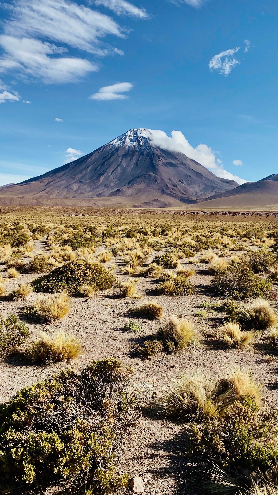

Aventure
dans le désert d'Atacama

Découvrez les merveilles du désert d'Atacama lors de ce séjour de 6 jours et 5 nuits. Vous explorerez les paysages uniques de ce désert, notamment les geysers, les lagunes colorées, les volcans et les salines, et observerez la faune et la flore locales. Vous pourrez également profiter de la culture locale en visitant les villages traditionnels et en dégustant la cuisine locale.
a partir de
1200€
Inclus dans le tarif
- Tous les transferts aéroport inclus
- Hébergement en hôtel 3 étoiles pendant 5 nuits
- Tous les repas inclus (petit déjeuner, déjeuner et dîner)
- Guide anglophone pour les activités et visites mentionnées dans l'itinéraire
- Toutes les activités mentionnées dans l'itinéraire
- Tous les équipements nécessaires pour les activités (vélo, randonnée, etc.)


Visite de la Vallée de la Lune et de la Vallée de la Mort pour observer les formations géologiques uniques, visite des geysers, excursion dans les lagunes, et bien d'autres activités vous attendent...